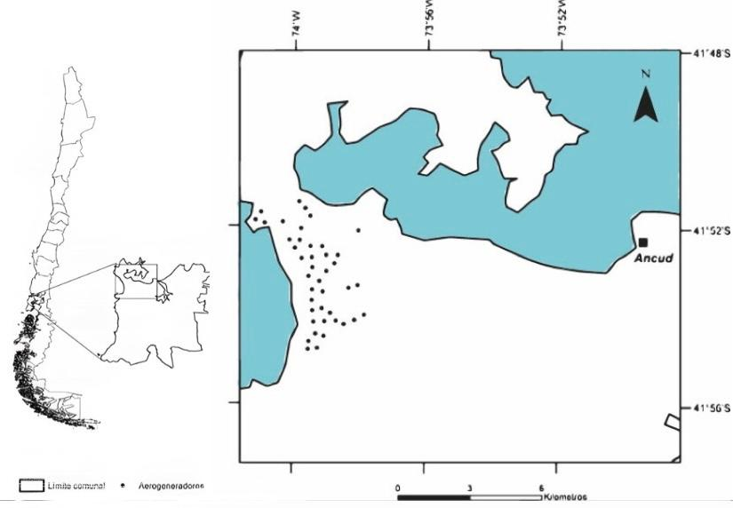
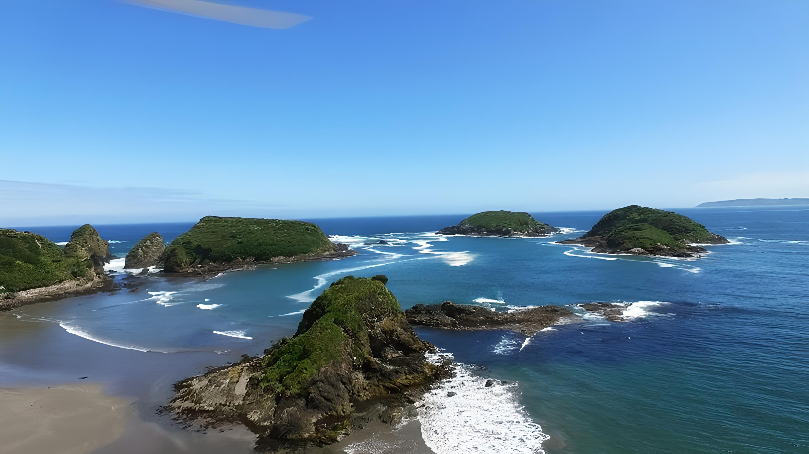
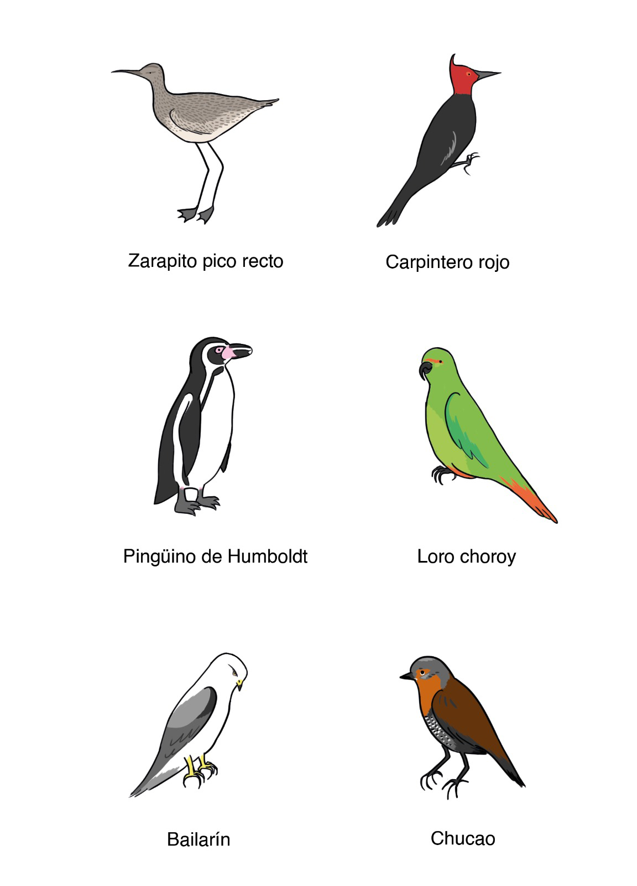
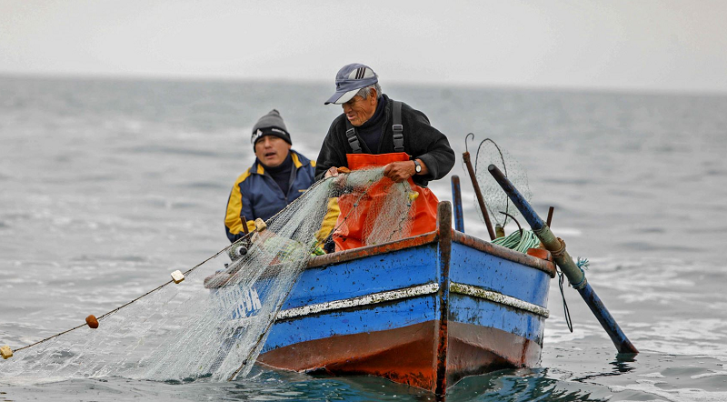
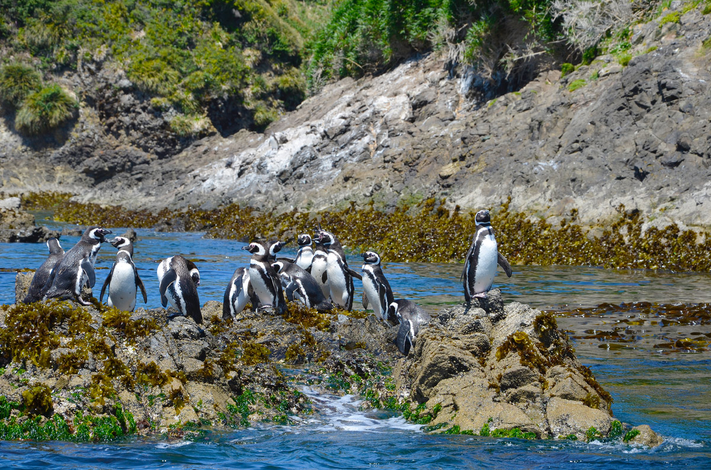
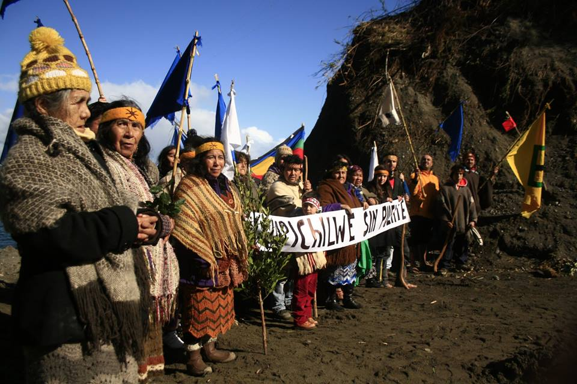

Por Ignacia Quiroga, Emilia Gálvez y Isidora Retamal PUBLICADO EL 10 DE JULIO DE 2023
Desde el 2010 se ha estado desarrollando el proyecto Parque Eólico Chiloé, a ubicarse en el sector de Mar Brava, en el noroeste de la Isla Grande de Chiloé. En tal ubicación, esta alternativa de energía verde,
afectaría negativamente el medioambiente, la economía ecoturística y la cultura chilota.

Mapa zona playa Mar Brava, Comuna de Ancud, Chiloe.
Este proyecto eólico planea situarse en la zona costera del noroeste de la comuna de Ancud, Isla Grande de Chiloé, Región de Los Lagos, específicamente en la bahía de mar brava y la reserva de Puñihuil.
Gracias a una gran riqueza en biodiversidad, calidad paisajística, patrimonio arqueológico y cultural, esta zona constituye el principal eje turístico de la comuna.

Foto de la Piedra Run, https://www.ancud.cl/mar-brava/
Foto de cabalgata por la playa, la pueden sacar de https://www.ancud.cl/mar-brava/
Dentro de la zona también se encuentra la laguna Quito y a su borde el museo prehistórico de quito. En el territorio se pueden encontrar tambien actividades como cabalgata en Cocotue Aventura Cabalgatas y
restraurantes donde poder gozar de la comida típica.
Un proyecto de energía verde
Se define como energía verde a toda energía que provenga de recursos proporcionados por la naturaleza, ya que son limpias (no dañan el medioambiente como los combustibles fósiles) e inagotables (como el
viento). Pueden reponerse más rápido de lo que se consumen. La energía renovable es aquella que se obtiene a partir de una fuente inagotable, se renuevan más rápido que el propio consumo de la misma, pero que
no necesariamente es amable con el medio ambiente Todas las energías verdes son renovables, pero no todas las renovables son verdes.
La fuente primaria de la matriz chilena es el carbón, que aporta un 41% del total, seguido por la biomasa (26%) y el gas natural (15%), Todas las plantas hidroeléctricas en funcionamiento aportan un 11% a la
matriz eléctrica chilena y el el 6% restante lo aportan la energía eólica y solar combinadas.
Gráfica mixta de biomasa: Una foto y un mapa de Chile que indique dónde se pudo haber tomado.
Gráfica mixta de solar: Una foto y un mapa de Chile que indique dónde se pudo haber tomado.
Gráfica mixta de eólica: Una foto y un mapa de Chile que indique dónde se pudo haber tomado.
Ecopower,es una empresa que opera principalmente en el sector terciario de la economía basándose en el modelo extractivista. Ofrece principalmente servicios relacionados con la energía eléctrica,
específicamente con la energía eólica integrando a Suecia como principal ejemplar, ya que este país aspira a alcanzar el 100% de producción de electricidad renovable en 2040. -Fue fundada en 2007 con
capitales nacionales y suecos, cuenta con una inversión de US$ 250 millones para el proyecto -Actualmente su CEO es Julio Albarrán Ríos y su gerente de operaciones es Patricio Ponce.
Gráfica funcionamiento energía eólica y transformación de energía.
Impacto del proyecto del Parque eólico Chiloé
Afecta directamente el ecosistema consolidado en la zona, como las modificaciones del suelo, erosión, alteración arqueológica y pérdida del valor paisajístico. También afecta considerablemente a más de 3000
aves migratorias (perjudicadas por la contaminación acústica), además de las cientos de especies terrestres endémicas. Influye también negativamente en el avistamiento de cetáceos, ya que la zona de Mar Brava
posee la mayor concentración de ballenas azules del hemisferio sur

Fauna de la zona: Copiar estilo de la gráfica figurativa central en https://multimedia.scmp.com/infographics/news/china/article/3064927/wildlife-ban/index.html
Las actividades productivas presentes en el área de estudio se vinculan a labores agrícolas, ganaderas, de pesca artesanal y turísticas (ecoturismo), desde un enfoque rural y ecológico, las cuales se verían
afectadas con la instalación de estas megaestructuras, afectando de manera directa la economía interna de la zona.

Foto pescadores artesanales.
Dentro de la zona, nos encontramos también con las pinguineras de Puñihuil, Los islotes de Puñihuil son tres y tienen una superficie aproximada total de 9 hectáreas. Fueron declarados "Monumento Natural" en
1999 por decreto nº 130 del Ministerio de Agricultura. Los Monumentos Naturales corresponden a unidades que han sido creadas para proteger especies nativas de flora y fauna, o sitios geológicos relevantes
desde el punto de vista escénico, cultural, educativo o científico.

Foto Pingüineras de Puñihuil.
El discurso sustentable social, surgido por la comunidad Huilliches que habitan la zona (aproximadamente 5000 habitantes) en contra la invasibidad del proyecto eólico, quienes hacen hincapié en la cosmovisión
y conservación del territorio sagrado. Además, se creó una desconfianza entre los agentes principales del proyecto y los habitantes debido a la nula consideración respecto al proyecto eólico, sin ser
consultados previamente.

Foto comunidades Huillinches.
Las políticas del proyecto
La legislación chilena exige a los titulares de los proyectos que se sometan a un estudio de impacto ambiental (EIA) cuando se ubican próximos a un área donde existan asentamientos humanos o cercanos a una
zona protegida. En este caso, la empresa consideró el sector de Mar Brava, donde se pretende ubicar el parque eólico, como zona no poblada y área no protegida. Adicionalmente, el proyecto original no incluía
nada sobre la intervención en el territorio (carreteras, tendido eléctrico, etc.). De acuerdo con la Ley n.o 19.300, sobre bases generales del medio ambiente (modificada por la Ley n.o 20.417), el titular del
proyecto que se somete al SEIA lo hace presentando una declaración de impacto ambiental (DIA), salvo que dicho proyecto genere o presente alguno de los siguientes efectos, características o circunstancias
contemplados en el artículo 11 de la Ley, caso en el cual deberá presentar un estudio de impacto ambiental (EIA): a) Riesgo para la salud de la población, debido a la cantidad y a la calidad de efluentes,
emisiones y residuos. b) Efectos adversos significativos sobre la cantidad y la calidad de los recursos naturales renovables, incluido el suelo, el agua y el aire. c) Reasentamiento de comunidades humanas o
alteración significativa de los sistemas de vida y las costumbres de los grupos humanos. d) Localización en o próxima a poblaciones, recursos y áreas protegidas, sitios prioritarios para la conservación,
humedales protegidos, glaciares, susceptibles de ser afectados, así como el valor ambiental del territorio en que se pretende emplazar. e) Alteración significativa, en términos de magnitud o duración, del
valor paisajístico o turístico de una zona. f ) Alteración de monumentos, sitios con valor antropológico, arqueológico, histórico y, en general, los pertenecientes al patrimonio cultural.
Linea de tiempo hitos políticos desde el inicio a la actualidad.
En mayo de 2013, la empresa EcoPower presentó su estudio de impacto ambiental y estimó que la construcción del parque eólico comenzaría en 2014, una vez obtenida una nueva calificación ambiental. En 2019 el
Estado chileno demandó a Ecopower por no pagar el alquiler de los terrenos del proyecto. En agosto pasado se solicitó invalidar la resolución del 13 de noviembre del año 2020 de la Superintendencia de Medio
Ambiente (SMA) acusando una serie de vicios o irregularidades con las que la empresa informó el inicio de la ejecución del proyecto, 3 días antes que se venciera el plazo de 5 años.